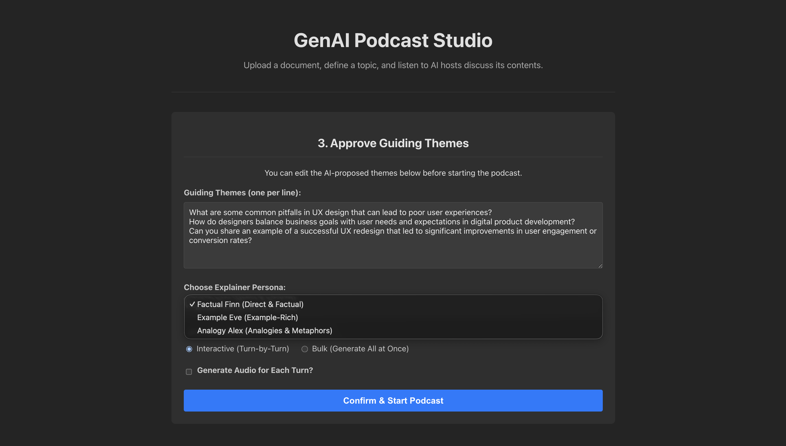
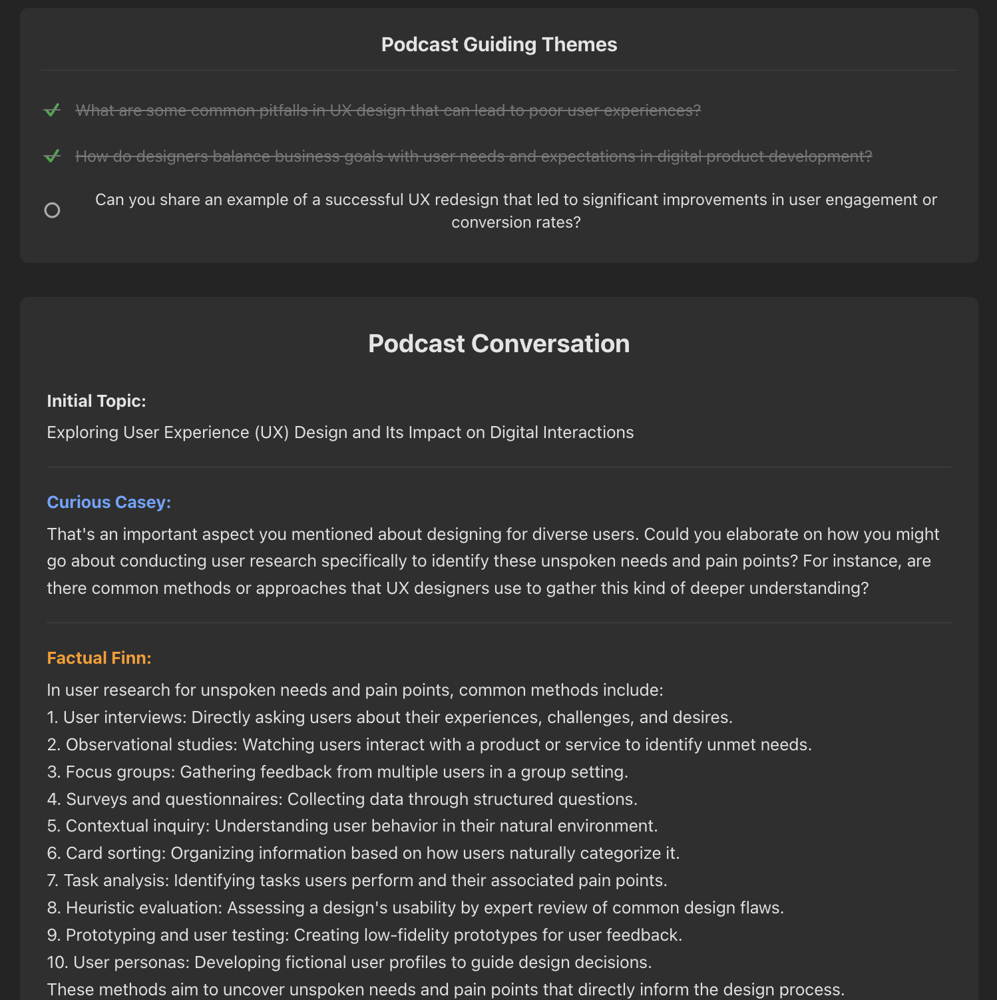
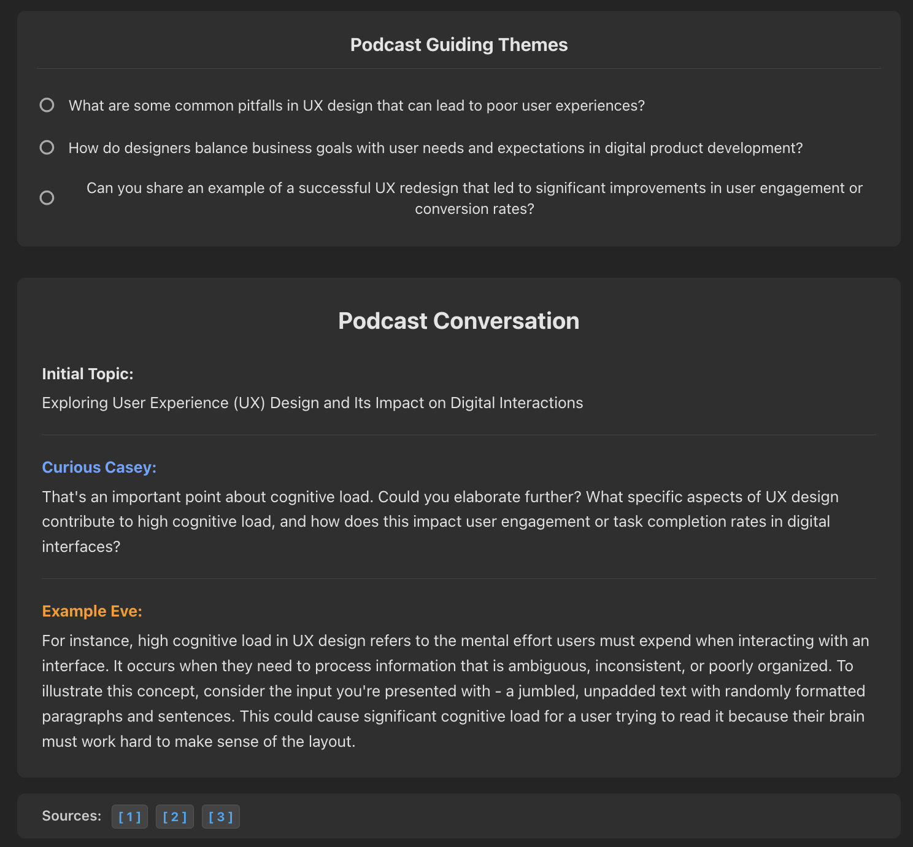
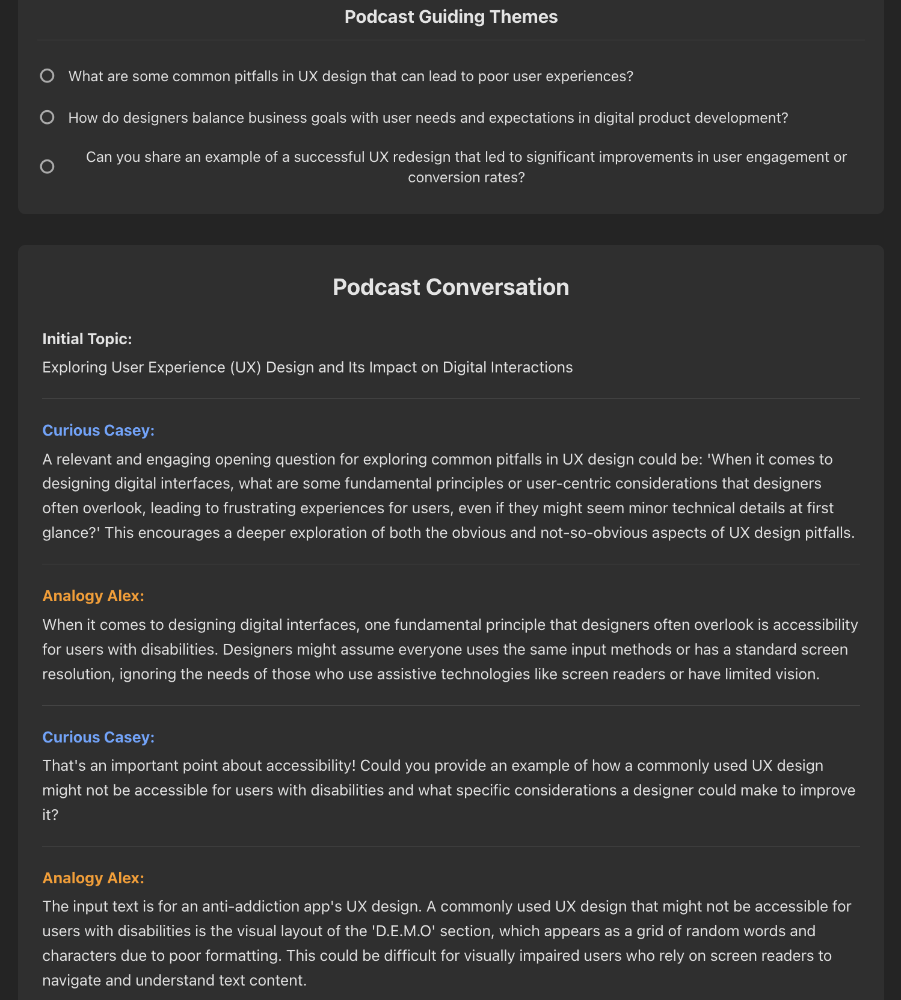

Curiocity: Orchestrating Multiple Agents
A 0-to-1 build of a stateful, interruptible multi-agent conversational AI platform.
The Engineering Goal
Most AI chats are strictly sequential and involve a single model. My goal with Curiocity was to engineer a 0-to-1 platform where multiple distinct AI agents interact simultaneously, debate topics, and can be dynamically interrupted and steered by a human user in real-time.

The Vue 3 frontend: Users define the guiding themes and select the specific AI persona for the LangGraph state machine before the podcast begins.
Architecture: State Machines over Chains
A standard Input -> LLM -> Output pipeline fundamentally fails in a multi-agent setup. If a user interrupts an ongoing debate, a simple linear chain loses track of the conversational context.
To solve this, I orchestrated the agents using LangGraph, modeling the conversation as a state machine. The graph dictates whose turn it is to speak, how to handle external tool calls, and exactly how to transition back to the main flow after an interruption.
The entire orchestration engine was served via FastAPI (REST APIs). To ensure reliable downstream integration between the agents and the client, I implemented strict schema validation and structured data extraction using Pydantic.
LLM-as-a-Judge & Structured Output Routing
To ensure the conversation stays on track, the graph doesn't just transition blindly. It uses an "LLM-as-a-Judge" pattern. After the expert speaks, the EVALUATE_THEME_COVERAGE node invokes a general LLM with a strict Pydantic schema to grade the response. If the LLM returns is_covered: True, the graph router moves to the next theme. If False, it loops back to the interviewer.
# From: backend/main.py
class CoverageEvaluationOutput(BaseModel):
is_covered: bool = Field(description="Set to true if the theme was adequately covered, false otherwise.")
reasoning: str = Field(description="Explanation for why the theme was or was not considered covered.")
# ... inside evaluate_coverage_endpoint ...
parser = PydanticOutputParser(pydantic_object=CoverageEvaluationOutput)
retry_parser = RetryWithErrorOutputParser.from_llm(parser=parser, llm=general_llm)
# The LLM strictly evaluates the current state against the schema
evaluation_result = await retry_parser.aparse_with_prompt(response.content, prompt_value)
# The graph router uses this deterministic boolean to decide the next edge
if evaluation_result.is_covered:
# Route to END or next theme
else:
# Route back to Curious Casey for a follow-upCore Mechanics & Problem Solving
Explicit State & Memory Management
Problem: Pushing the entire chat history back and forth between multiple agents rapidly exhausts context windows and degrades response quality.
Solution: I treated state management as a first-class architectural component. I built a dedicated "summarizer node" into the graph. After a set number of turns, this node explicitly compresses the conversational state into a rolling summary. The next agent receives only this dense summary plus the immediate previous turn, keeping the system fast, cheap, and focused.
Persona Enforcement via LoRA Fine-Tuning
Problem: Prompt engineering a single massive API model to act like 4 distinct characters usually results in them all bleeding into the same generic "AI" tone.
Solution: I moved away from monolithic API calls. I created specialized, quantized GGUF models (e.g., curious_casey_q4_k_m.gguf, analogy_alex_q4_k_m.gguf) and orchestrated them locally using Ollama. By binding a specific, distinct model to specific nodes in the LangGraph, I achieved true multi-agent persona separation without massive cloud inference costs.
System Observability
Problem: Debugging a multi-agent system where state transitions happen asynchronously and data is passed dynamically between nodes is nearly impossible with standard logging.
Solution: I integrated LangSmith deep into the architecture. This provided high-fidelity tracing for every state transition, LLM input/output, and latency spike. It converted a black-box multi-agent orchestration into a fully observable, predictable system.
Human-in-the-Loop (Graph Interruption)
Problem: Standard LLM chains are fire-and-forget. Once started, a user cannot interject or steer the conversation until it finishes.
Solution: By leveraging LangGraph's MemorySaver checkpointer, I configured the graph with interrupt_after=["EVALUATE_THEME_COVERAGE"]. This explicitly freezes the state machine, allowing the FastAPI backend to yield. If the user submits a doubt via the UI, the submit_doubt_endpoint mutates the frozen state with the user's input and resumes graph execution, dynamically routing to the FACTUAL_FINN_ANSWER_DOUBT node before seamlessly returning to the main podcast flow.
The Personas in Action
By routing the LangGraph state to different locally orchestrated GGUF models, the system dynamically shifts its conversational tone based on the user's initial selection. Here are three distinct personas answering UX design queries:

Factual Finn: Direct, objective, and lists methods methodically. The Theme Tracker at the top automatically updates as the LLM-as-a-Judge marks topics as "covered".

Example Eve: Grounds abstract concepts (like cognitive load) in concrete scenarios. Note the deterministic RAG source citations generated at the bottom.

Analogy Alex: Navigates the dialogue by drawing immediate, relatable comparisons to bridge complex ideas.